RTR: Imperium Surrectum
RTR: Imperium SurrectumMinor Greeks 6: the Black Sea
2023-08-20 · ahowl11

Welcome back to another RIS dev diary. Today, we will pick up where we left off last time: With the Milesian colonies on the BLACK SEA. On the western coast of the sea, Odessos (now Varna, Bulgaria) and Apollonia Pontike (now Sozopol, Bulgaria) were set up as Milesian bases around 600 BC. They would later join together with the foundations of other factions we have already previewed: Mesambria or Mesembria (Nesebar, Bulgaria) was a Byzantine apoikia (possibly with the participation of either Megara or Chalkedon) and Kallatis (Mangalia, Romania) was a colony of Herakleia Pontike. In the third century BC, the emporion Tomis also became a Polis, and together they formed the so called PONTIC PENTAPOLIS.
As we have already seen, Greek life on the western coast of the Pontos Euxeinos began with Milesian, Herakleiote and Byzantine colonisation, and the area would remain connected to these three mother cities. Soon after the foundations, the Pontic Poleis developed into important economic centres. While Kallatis and Mesambria drew their revenue from their fertile hinterlands, Apollonia and Odessos served as the ports that exported the products of coastal northern Thrace. During the 5th century, all four cities joined Athen's Delian League. Though no koinon or any other form of political association is attested for this early period, the Pontic Poleis obviously lived in harmony and seem to have coordinated their common policy. Due to the lack of external threats and major internal conflicts, there was no need to write down any rules to determine their relations, but in the second half of the 4th century BC, that would change: Odessos was attacked by Philip II of Macedon, but successfully withstood a siege. Afterwards, the king offered a peace treaty to all four cities that guaranteed their autonomy. The diadoch Lysimachos was less gracious, however, and in a quick campaign he managed to annex the whole area. The people of Odessos and Kallatis now turned to the Thracian king Seuthes III, who supported a revolt against Lysimachos in 313 BC. For the first time, a political alliance was formed between the four communities. The rebellion was initially successful, but Lysimachos returned only a few years later and after prolonged fighting, the West Pontic cities agreed to accept his overlordship once again.
After the death of Lysimachos in 280 BC, the cities regained their autonomy and, by 270 BC and the start of the RIS campaign, they also controlled smaller settlements that weren't fully developed Poleis such as Dionysopolis or Anchialos. Most important among these was Tomis or Tomoi, a small Milesian emporion (trade port). In the 260s BC, the four Poleis decided to enlarge Tomis and make it the main emporion for the Western Pontic Greeks. As such, it received the rights, institutions and public buildings of a Polis, so that from this point on there were five (western) Pontic Poleis, forming the Pentapolis. However, their local hegemony was threatened by raids of the Asti, a Thracian group situated between the Pentapolis and Byzantion, who could only be overcome with Seleucid assistance. But with the promotion of Tomis and the invitation of the Seleucids, the Western Pontic Greeks had overstepped the mark: Alarmed by the prospect of a Tomian monopoly on Black Sea trade and a strong Seleucid presence, the Northern League (see older dev diary) met in an emergency assembly and informed Ptolemy II about the looming threat. Together with the Ptolemies, Byzantion and Herakleia Pontike raised large forces on land and sea and declared war on their own colonies. While Antiochos II and Istros in the northwestern corner of the Black Sea supported the Pentapolis, Ptolemaic and Byzantine money soon had the Asti and their Thracian neighbours attack the Seleucid possessions in Europe. While Antiochos II eventually arrived with a sizeable army and conquered his foes, he was thus drawn away from the coast. The fleet of the Pentapolis was decisively defeated, the trade monopoly of Tomis dissolved and the five Poleis put under the joint 'protection' of the Northern League and Ptolemaios II.
Though the local economy recovered rapidly, the military weakness of the Pentapolis had now been exposed and its 'barbaric' neighbours took advantage of this: Already around 200 BC, several Getic kings either erected protectorates over some of these cities or attacked them. Kallatis suffered from Bastarnae raids in the 2nd century BC, while Mesambria and Apollonia Pontike turned against each other in a fight over Anchialos at the same time. Having maintained friendly relations with the Pontic kings since the 2nd century, Kallatis, Odessos, Mesambria, Tomis and Apollonia were conquered by Lucullus in 72 respectively 71 BC and later fell under the rule of the Dacians in the time of their king Burebista. They only recovered under the Romans: In 29 BC, a West Pontic Legaue (koinon) was founded and by 9 AD Ovid already found thriving communities in the area once again. Only Kallatis declined because of silting in the Danube Delta, but Tomis now became the metropolis (capital) first of the Pentapolis and later the Hexapolis (six cities), after Trajan had added Markianopolis, named after his sister Ulpia Marciana.
Medusa on a coin of Apollonia Pontike, 4th century BC
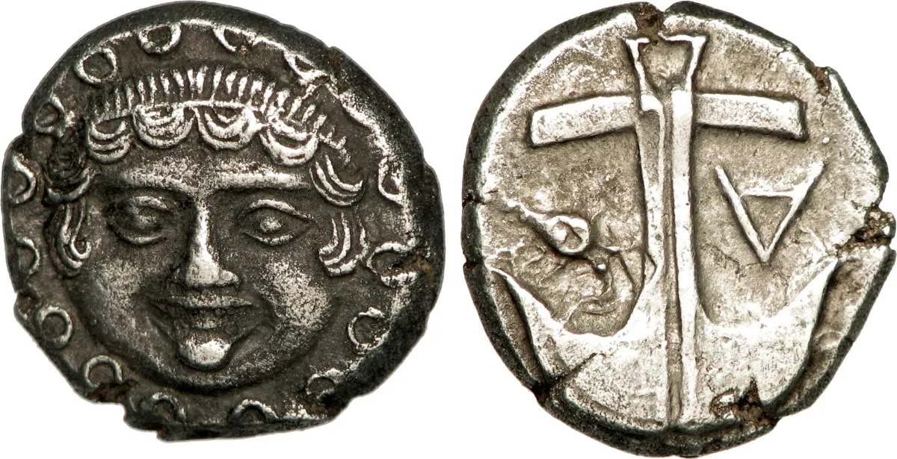
The fortifications of Mesambria today
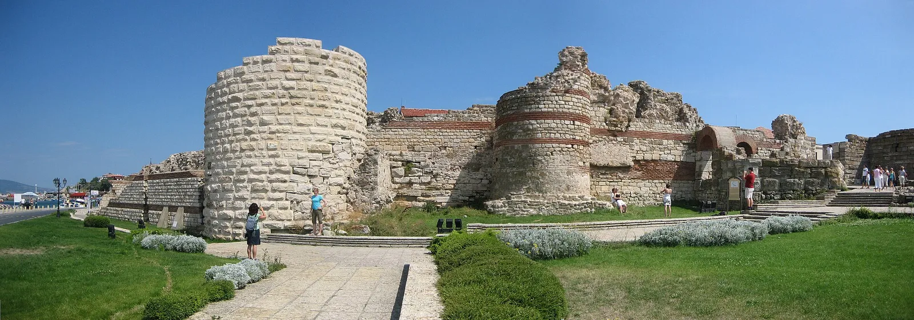
Statue of Ovid in front of the National History Museum in Constanța (Romania), ancient Tomis
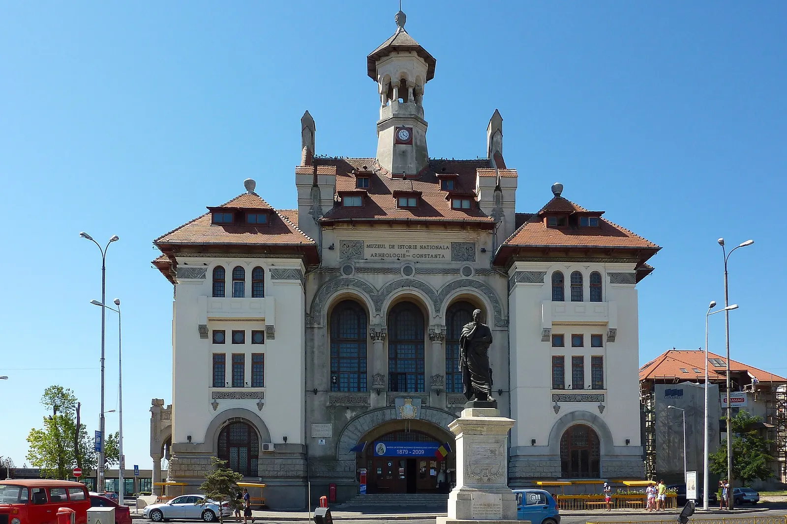
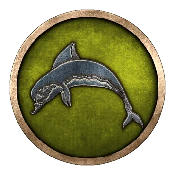
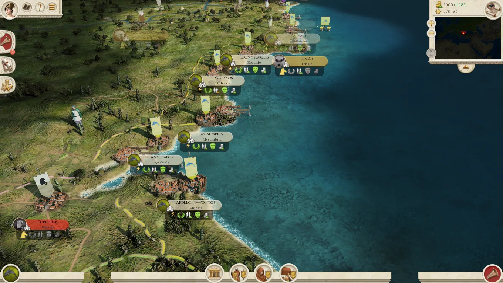

Tomian Epilektoi
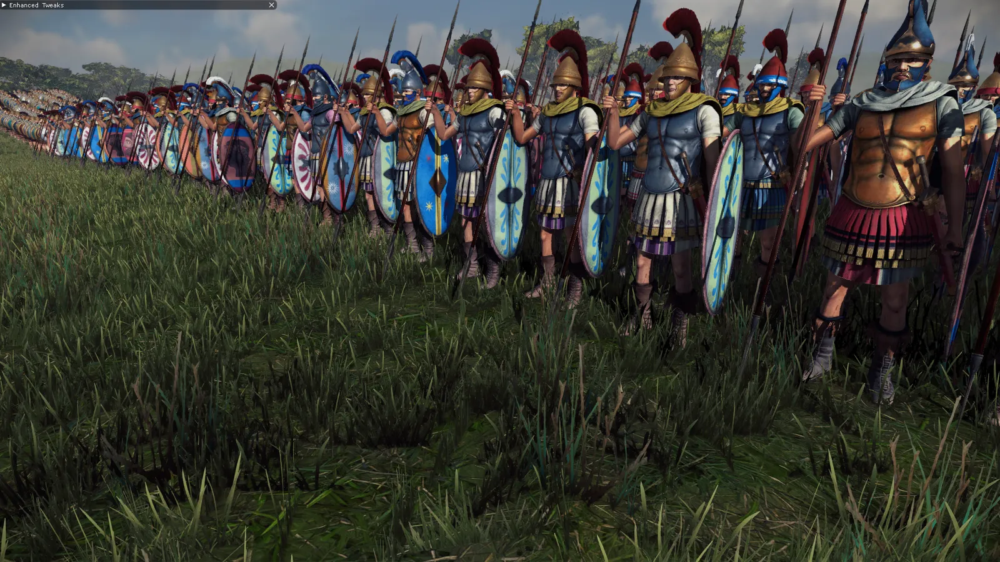
Our second faction in the Black Sea preview has by now already been mentioned: ISTROS or Istrie was named after the ancient Greek word for the Danube, as it was located just south of the river's mouth. If you have paid attention to the last DD, you will easily guess who founded the town - the damn Milesians, once again, most likely in the late 7th century BC, just before they added Odessos and Apollonia Pontike further South. It was established as an emporion for the trade with the Getai, and served as a sanctuary of Apollo from early on. After only two or three generations, Istros became one of the most affluent trade cities on the Black Sea coast, importing and exporting products to places as far as Miletos, Rhodes, Samos, Corinth or Athens. Though it was conquered by Dareios I in 512 BC, an Athenian force freed it during the Greco-Persian Wars and Istros fell under Athenian influence. During the 5th century, the urban settlement was significantly expanded and impressive public buildings start to appear in Istros. The beginning of silver coinage during this period attests Istros' extraordinary wealth. But all the glittering silver, the beautiful edifices, the Athenian pottery and the Corinthian jewellery attracted jealous neighbours. Istros and its coastal possessions were first threatened by the mighty Odrysian kings of Thrace, then by the regional Scythian kings in Scythia Minor. But both groups of Barbarian monarchies suffered catastrophic defeats at the hands of Philip II of Macedon in the mid 4th century BC, relieving Istros of the danger for the near future. When Lysimachos subjugated the cities of the later Pontic Pentapolis, Istros also accepted his position, but seems to have been able to preserve most of its autonomy, including possession of the harbours of Orgame and Istrianon Limen.
After the death of Lysimachos in 280 BC, Istrian independence was fully restored, and it intensified its friendly relations with the Pontic Pentapolis. During the Tomian War in the 250s BC (see DD for Pentapolis), Istros supported the Pentapolis, but escaped the wrath of the Northern League and the Ptolemies. Yet, the weakening of its allies also had consequences for Istros: it was variously attacked by Getai and Bastarnae during the early 2nd century BC and shortly appears under the 'protection' of the Getic king Rhemaxos, who helped the Istrians to beat back the raids of his rival Zoltes - together with a select band of citizens that were stationed as archers in fortresses in the countryside. Istros fell under the Pontic dominion in the early 1st century and became an amicus populi Romani - friend of the Roman people - in 72 BC. Around 50 BC, it was brutally conquered and then occupied by the Dacians under Burebista, who took advantage of the Roman civil wars. Only after Burebista's death and Octavian's victory at Actium did Istros return to the Roman sphere. In the 1st century AD, it joined the West Pontic Koinon and flourished until the 3rd century AD, when it was sacked by the Goths. What remained was destroyed by the Avars and Slavs in the late 6th century AD.
The coinage of Istros under Lysimachos, depicting two male heads, either representing the Dioskouroi, the two branches of the Danube or the rising and the setting sun. Reverse: A sea eagle grasping a dolphin
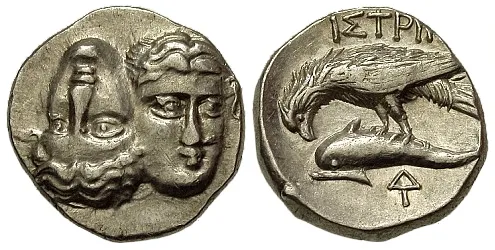
The ruins of Istros, aerial view
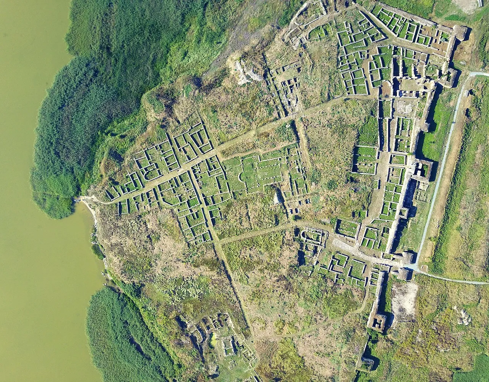
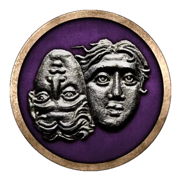
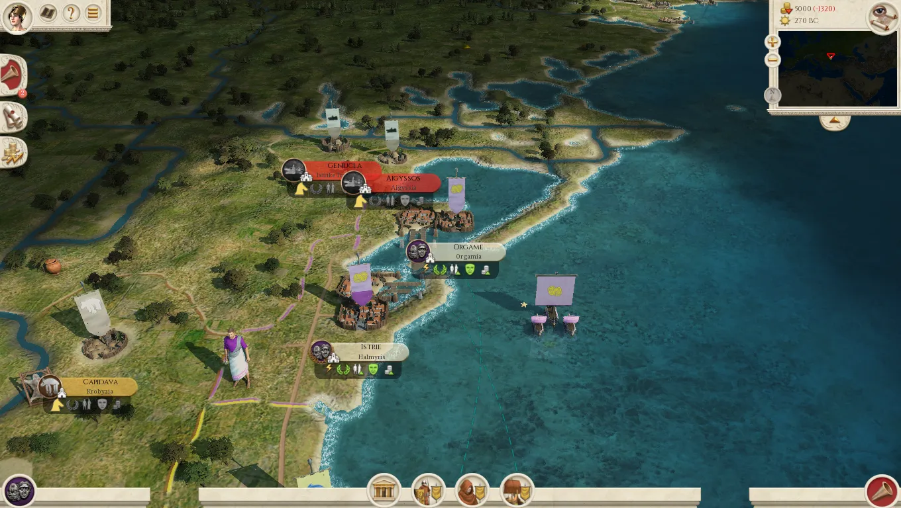
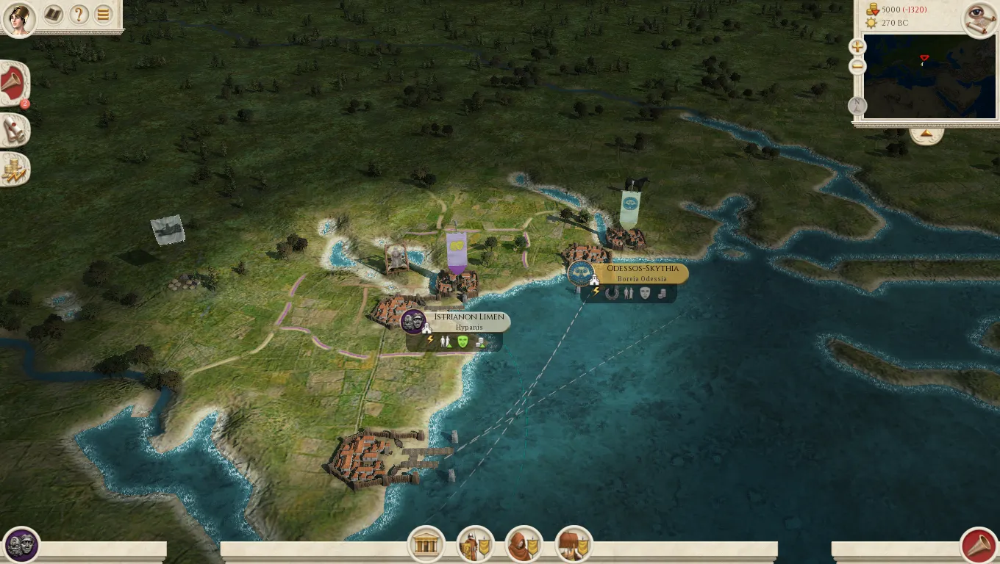
Istrian Archers
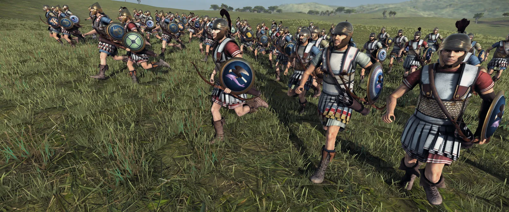
Moving further to the east, our third faction today is OLBIA on the north coast of the Black Sea. A short question to see if you paid attention so far - who founded Olbia... ? ..... YAS! You are right! 100 points! It was, of course, our smug and pretentious Milesians. At some point in the early 6th century BC, Milesians scouts reached the point where the Borysthenes and Hypanis rivers meet - the modern Dnieper and Southern Bug. Here, they set up a small settlement that was called Borysthenes after the river, but soon acquired the second name Olbia. After only a few decades, it had become a wealthy and large Polis, and - again we have said this many times before already, my dear students - almost inevitably, it was attacked by its neighbours. The Scythians devasted the territory of the Olbiopolites and seem to have erected a protectorate: Skyles, the son of Ariapithes, king of the royal Scythians, and of a woman from Istros (see above), ruled both Scythian and Greek territory, but was eventually killed by his brother Oktamasades.
Yet, his dynasty seems to have continued and was probably still controlling the city when Herodotus visited it in the mid 5th century. The 'Father of History' was impressed by Olbia's riches and tells us that these were mainly due to Olbia's location on both the Amber Road and a caravan road into Central Asia. Only a few years later, Perikles launched a big Black Sea expedition and accordingly joined Athen's Delian League - though the Scytho-Greek dynasty of the Molpoi was left in charge of affairs. The following decades saw rapid economic growth and flourishing religious life: While worship of Apollo and Dionysos dominated, Orphism now also found a large base of followers. The Orphists lived a strictly vegetarian and ascetic life, honouring Orpheus and Dionysos. At the turn of the century, Zeus Eleutherios ("the liberator") joined the favourite Gods of the Olbiopolites: The Greek citizens finally overthrew the Scythian protectorate and dedicated their success to Zeus. A moderate democracy was established and the traditiona lties to Miletos and Athens strengthened.
This may have been one reason why Alexander the Great soon cast covetous eyes on Olbia. While he was securing western Asia, he dispatched his general Zopyrion to conquer Olbia. Zopyrion assembled an army of 30 000 men, made up of Macedonians, Greeks and Thracians and reached the city itself. The Olbiopolites now turned to their Scythian neighbours, and with their help, they recored a crushing victory over the Macedonians. On his retreat, Zopyrion himself was killed. This event improved the relations between Olbia and its neighbours and filled the city's inhabitants with confidence: The Persian Empire may have fallen, but they, the Olbiopolites, had repelled the Macedonian. The people of Olbia used the success to remove the last aristocratic elements of the Polis' constitution and Olbia entered a Golden Age: New public and religious buildings were erected, population and territory grew significantly and Olbia produced a huge number of Gold and Silver coins which became the standard currency north of the Pontos.
Olbian coins in the form of dolphins, 5th to 4th centuries BC
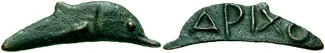
In 270 BC and at the start of the RIS campaign, Olbia is a prospering Polis that controls the North Pontic trade. It is allied with the Greek cities of the Western Pontos as well as with Sinope and Chersonesos, and it retains good relations with the Bosporan Empire. At this time, conflict with the Scythians and Sarmatians returned, but Olbia mostly kept them in check during the 3rd century BC. At the end of the century, a greater threat arose, however: Olbiopolite scouts reported that the Scythians and Sarmatians were in turmoil, and soon they appeared at the walls of Olbia, asking for protection. Greek farmers also fled from the countryside and the smaller ports to find safety behind the city's massive fortifications. What had happened? A terrible army from the West had appeared, sweeping everything before it. Inscriptions from Olbia call these enemies "Galatians". Were they really Celts from the Balkans that had made their way to these distant shores? Or did they originate further north, in Bohemia or Poland? Finally, it is possible that they are to be identified with the Bastarnae, the first Germanic people we know of. In any case, the scene was set for Protogenos of Olbia. Apparently the richest man in town, he simply paid off the 'Barbarians' and also convinced the neighbouring nomads to ride back to their traditional grazing grounds. Olbia was saved, and Protogenos gained great influence, possibly resulting in him obtaining a permanent position in government.
Olbia thus remained the leading power in southern Scythia for a few more decades, but in the mid 2nd century BC, its Golden Age finally came to an end: The Scytjhian king Skiluros forced Olbia into another protectorate, and ruled over its territory until his death in 118 BC. Soon after, Mithridates VI integrated Olbia into his Pan-Pontic Empire. While it escaped the Roman-Mithridatic Wars, it was attacked and sacked by Burebista of Dacia in 55 BC. The town was revived by Augustus, but by the late 1st century AD, we find the now oligarchic city as a protectorate of a Sarmatian king. Finally, Hadrian madeit a protectorate of the Bosporan Empire in the early 2nd century AD. The site was abandoned in Late Antiquity, but numerous ruins remained which were visited by Vasily Petrovych Goloborodko, the fictive Ukrainian president played by the later actual president, Volodymyr Zelenskyy, in *Servant of the People*.
The ruins of Olbia today
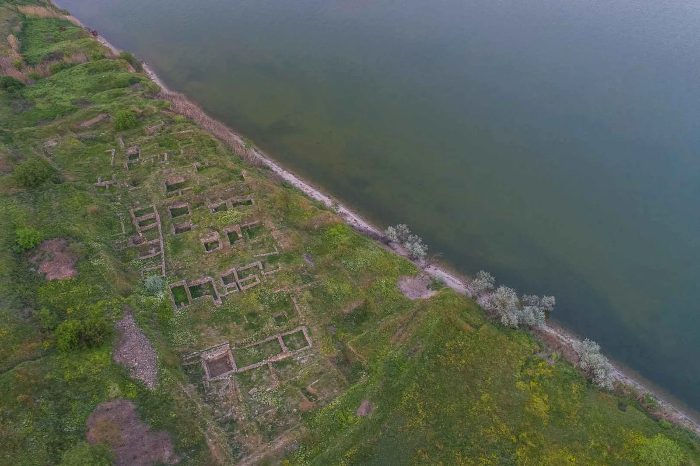
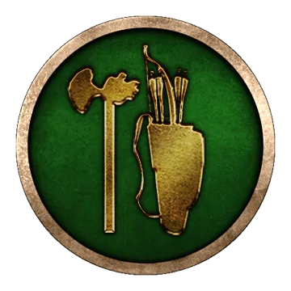
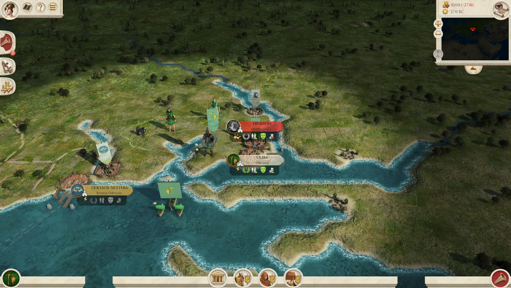
Olbiopolite Hoplites
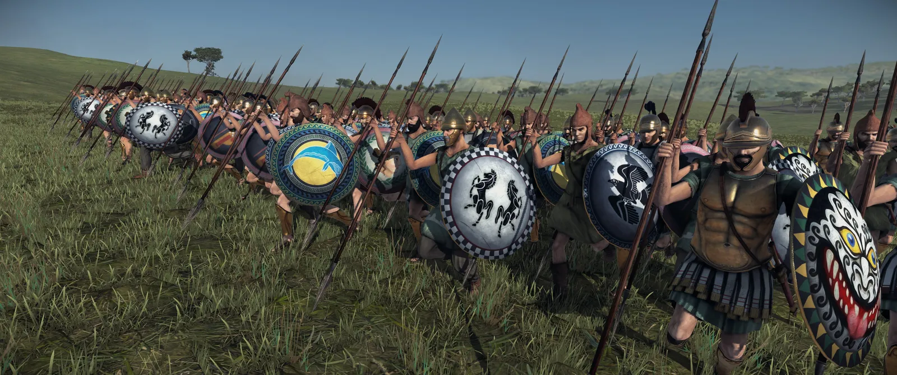
Olbiopolite Archers
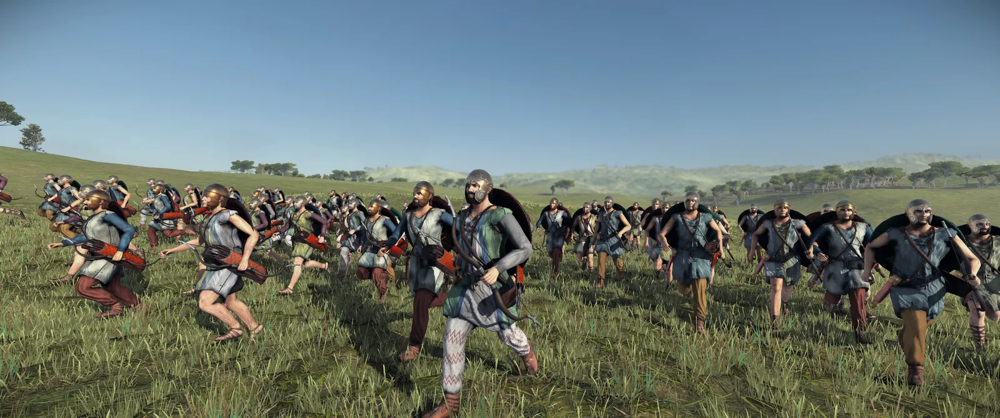
Mixhellenic Archers
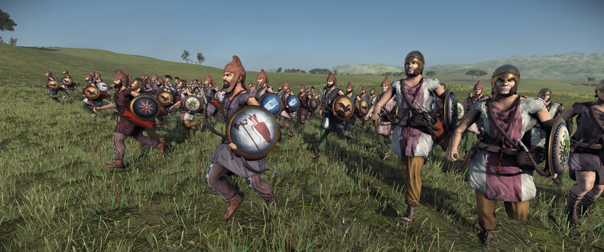
Faction numero quattro for the day is CHERSONESOS. Confusingly, Chersonesos is not to be identified with modern Cherson in Ukraine, but with modern Sevastopol, because some bootlicker renamed it Σεβαστούπολις/Sebastoupolis, "city of Augustus", in Roman times. Confusingly, Chersonesos is not to be identified with modern Cherson in Ukraine, but with modern Sevastopol, because some bootlicker renamed it Σεβαστούπολις/Sebastoupolis, "city of Augustus" ... oh wait, that seemingly happened in the 18th century, referring to Catherine the Great, not Augustus. Confused? So am I. So let's start from the beginning: Milesian merchants (who else) probably set up a small trade station here in the 6th century BC, but it took until the 5th century BC for people from Herakleia Pontike (them again, yup) to found an actual city. They defeated the native Taurians and immediately added two sub-colonies, Kerkinitis and Kalos Limen ("Beautiful harbour"). Thus equipped with a large territory, Chersonesos (literally: "peninsula") prospered economically, and soon began to mint its own coins, but it was often prone to raids and invasions by its neighbours. In the 4th century BC, the rulers of the Bosporan Empire to the east invaded its territory and were only stopped by an expeditionary force sent by the tyrants of Herakleia. In the early 3rd century BC, thanks to such raids, the city found itself in financial crisis, but it was saved by the loan of a wealthy citizen called Apollonios. Apollonios and his family were given privileged seats in the theater, and a statue of the man was erected on a public place.
Chersonesos has good relations with Pontos and the Siraces and is allied to Olbia and Herakleia, its mother city and protector. However, Taurian Scythians and the Bosporan Empire threaten it, and in fact this double menace continued to dominate its history. In the late 2nd century BC, Mithridates VI intervened to save Chersonesos from a Scythian attack ,but the city lost Kerkinitis and Kalos Limen. Only a few decades later, the Taurian Scythians returned, and this time it was only through an alliance with a Sarmatian king that they could be stopped. In the late 1st century BC, however, the troops of Chersonesos were no match for Asandros, king of the Kimmerian Bosporos, and the city was annexed. Chersonesos possibly regained its independence at the outset of the first century AD as new temples were erected, but in 60/61 AD it was besieged by Taurian Scythians once again. A new saviour appeared in the form of the Roman emperor Nero, who left a garrison in the city. Yet, the Scythian threat seemingly never ended and the Romans also failed to protect Chersonesos' chora (territory) effectively. When Hadrian became emperor, he handed over control of Chersonesos to the Bosporan king Kotys II to get rid of the problem. The citizens of Chersonesos were not amused, however, and under Antoninus Pius, they won back their freedom for a final time: Herakleia Pontike, still a free and powerful city within the Roman Empire, intervened on their behalf and convinced the emperor to declare Chersonesos free and autonomous once again. Remarkably, Chersonesos now not only withstood further Scythian and Bosporan incursions on its on, it remained a free ally of the Roman Empire until the 9th century AD, when it was integrated into Byzantine Crimea.
The ruins of Chersonesos, with modern Sevastopol in the background
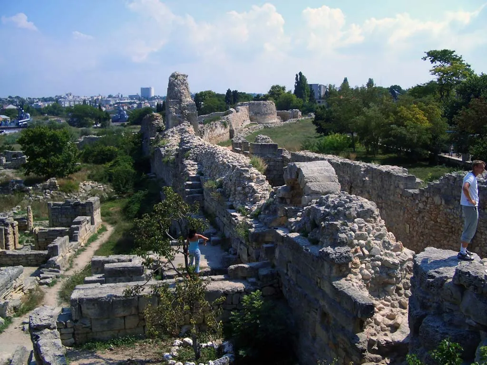
Coin of Chersonesos Taurike from the late 4th century BC, depicting Pan on the obverse and a griffon on the reverse
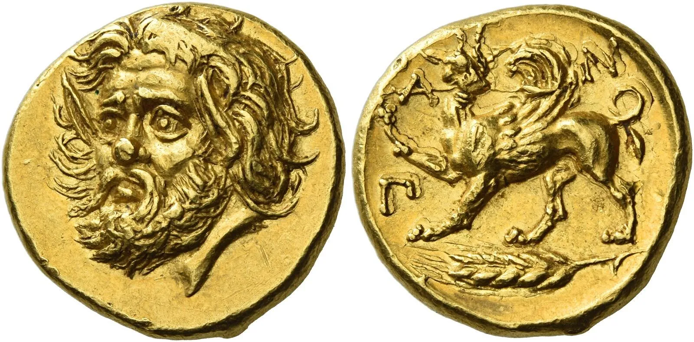
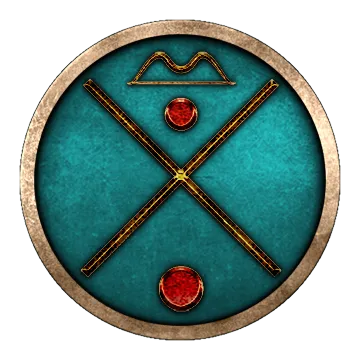
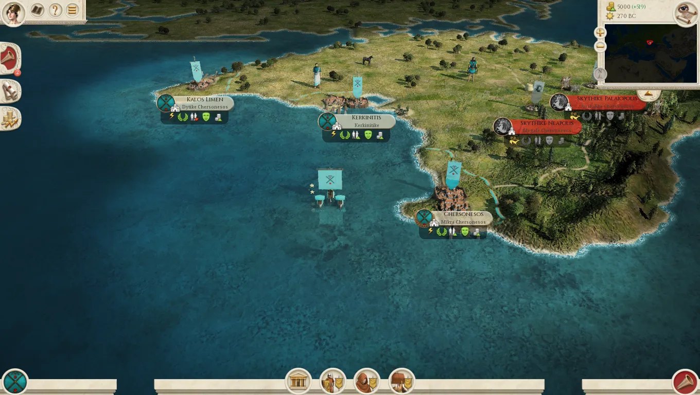
Chersonesian Hoplites
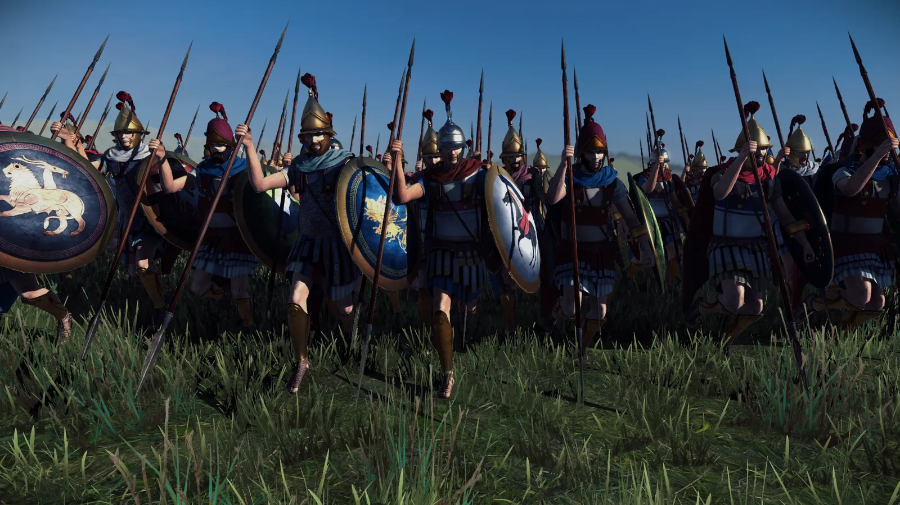
This concludes our dev diary to start your Sunday, be on the look out for the new Greek AoR Pt.2 Video from Red Zed today, as well as our final DD on the new Greeks!